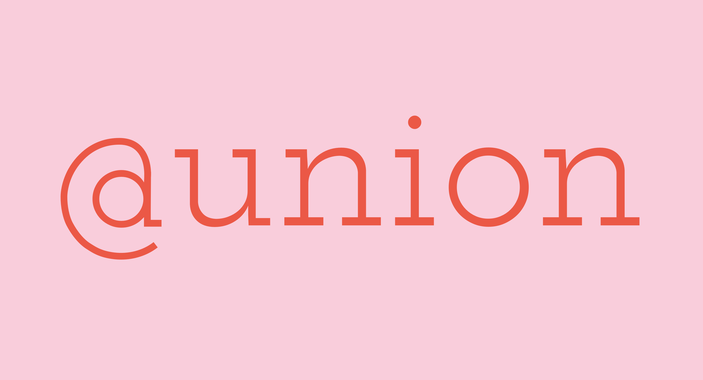

@Union Café
rebranding | 2018
If you live in Allston or have ever been in the area for food, it’s very likely you’ve been exposed to @Union. It’s a fantastic, popular little spot for some of the best breakfast, yet they have some unfortunate branding going on. Currently, the logo is very bland and could definitely use some refreshing. Even from the outside of the café, there are three conflicting identities shown on the facade, the banner, and the window. It feels far from a cohesive look and brand.

In any case, none of these three logos speak to the inside of the café. The disconnect between the two is glaringly obvious, and @Union deserves an identity that is more exciting, and it should definitely show off their true aesthetic.
primary logomark
This new logo serves to give @Union a fresh, inviting look on the streets on Allston. The most important part of rebranding the café was understanding the name itself. Saying "at" Union feels weird to some, but that is was makes the name unique and memorable. Due to this unusual name, I wanted to make sure the "@" symbol felt as memorable. By switching the starting point for the circle within the symbol, it remains both legible and interesting.